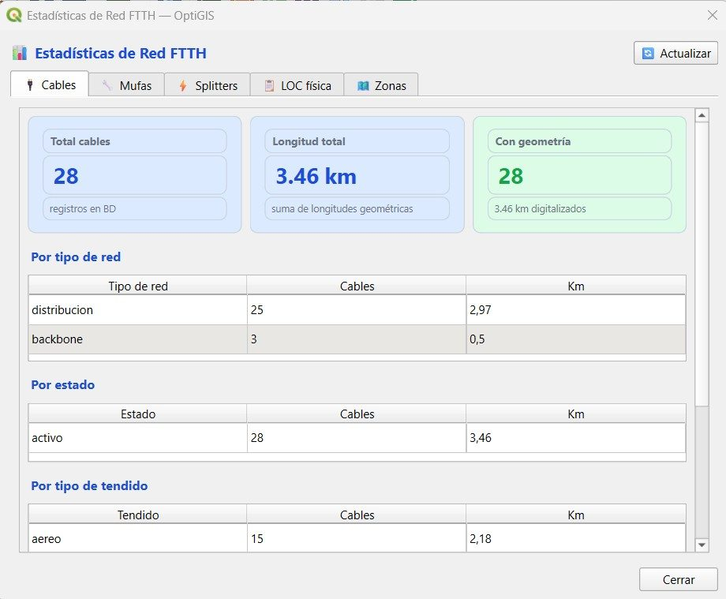
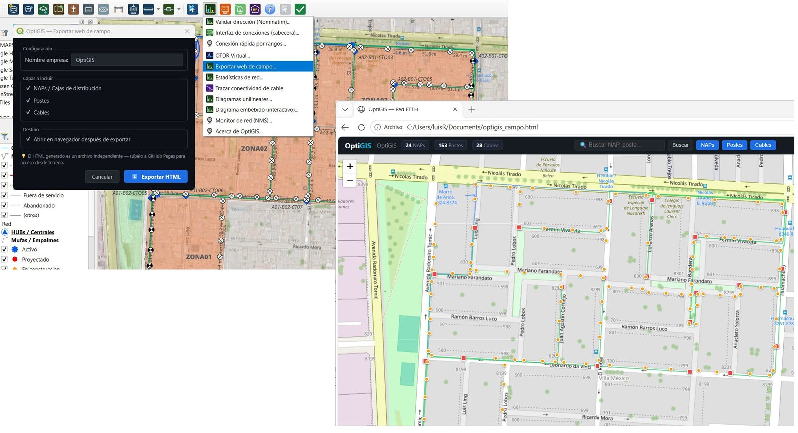
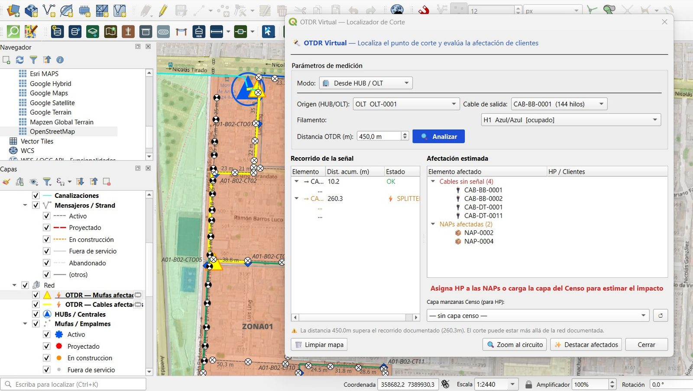
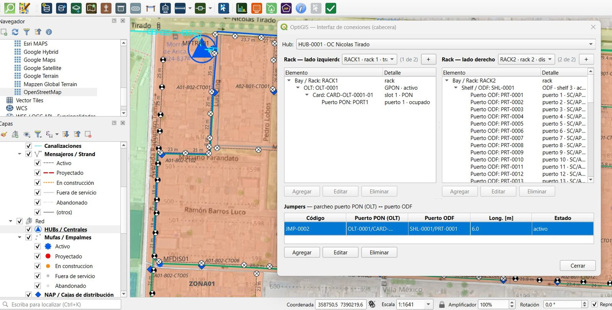
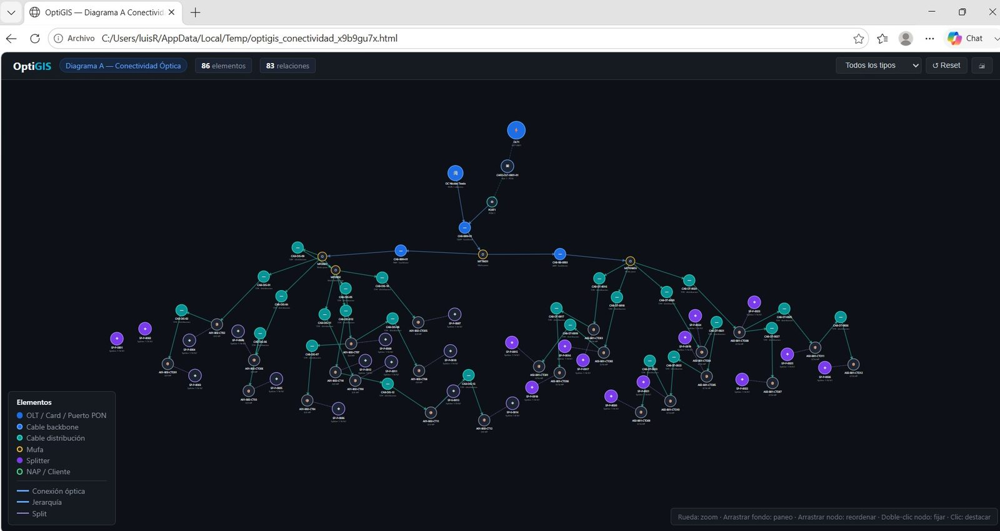

Un complemento profesional para QGIS que inventaría, conecta y documenta redes FTTH/GPON sobre una base de datos abierta.
Desde el poste en terreno hasta el puerto del OLT en la central: modelado topológico, conexiones y trazado punta a punta.
Postes, cámaras, mufas, canalización, NAP y clientes con edición topológica.
HUB, racks, ODF y OLT con plantillas de equipos y validación de U.
Terminación de ODF y fusiones en mufa/caja por rangos de hilos.
Cuentas físicas trazadas del OLT al cliente sobre el árbol GPON.
Esquemáticos interactivos con “Ir a” que encuadra el elemento en el mapa.
Power budget por enlace: valida el margen antes de salir a terreno.
KML, DXF y Shapefile mapeados a los tipos del modelo.
Ocupación de cables e hilos, consistencia y documentación técnica.
Capturas reales del complemento trabajando sobre una red FTTH: estadísticas, terreno, OTDR, cabecera y conectividad.

Totales de cables, mufas, splitters, LOC física y zonas, en tiempo real.

Exporta un visor web autónomo para el equipo en terreno, sin instalar QGIS.

Localiza el punto de corte y estima la afectación: cables sin señal, NAPs y clientes.

OLT, cards, puertos PON, ODF y jumpers OLT↔ODF en una sola vista.

Diagrama unilineal interactivo de la conectividad óptica de toda la red.
Demostraciones del producto sobre datos reales: modelado, conexiones, diagramas y reportería en QGIS.
OptiGIS trabaja sobre SpatiaLite —SQLite espacial estándar— con un esquema documentado y migraciones versionadas. Sin formatos propietarios, sin dependencia de proveedor.
Arma el árbol GPON con plantillas de ODF/OLT, define splitteo y valida el enlace con el presupuesto óptico. Detecta problemas en el escritorio, no en la calle.
Convierte el inventario en documentación: ocupación de cables e hilos, HP construidos vs. conectados, auditorías de consistencia y diagramas exportables.